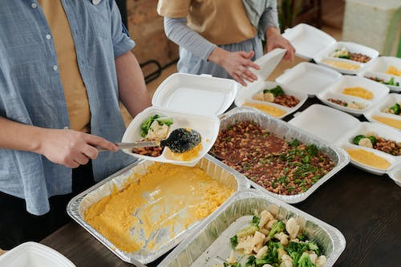
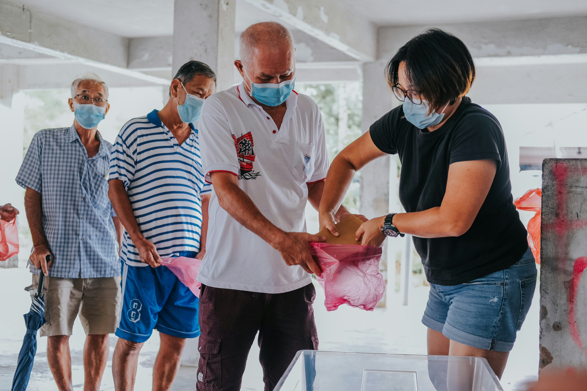
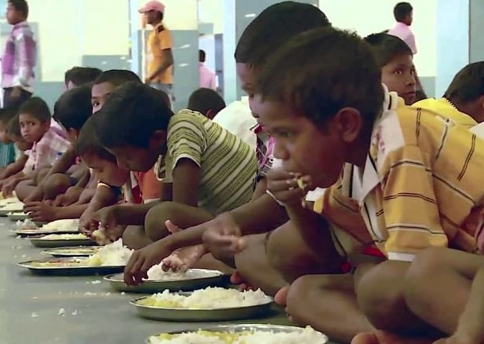

ABOUT US
Welcome to here where we are on a mission to eliminate hunger and food waste by connecting those with surplus food to those in need.
At our organization, we believe that everyone deserves access to nutritious meals. We work tirelessly to bridge the gap between food donors and beneficiaries, ensuring that no one goes to bed hungry.

OUR MISSION
Our mission is to create a world where hunger is eradicated, and no edible food goes to waste. Through collaborative efforts, we aim to build a sustainable and compassionate community that cares for its members.
.jpeg)
SHRUTI RAY
Founder & CEO
"Together, we can make a difference in the lives of those in need."
ROHAN MALHOTRA
Community Outreach Coordinator
"Every contribution, no matter how small, has the power to change lives."
OUR PROJECTS
Project A: Community Kitchen
The project's vision can be summarised by the phrase "Eat What is Already There". Around 1500 kilogrammes of food is donated to the Community Kitchen from producers, processors or wholesalers at the end of each day. With these ingredients, fresh, healthy and seasonal meals are prepared and consumed in the facility or by public canteens
Project B: School Lunch Program
It was introduced to address the issues of malnutrition, hunger, and lack of education among school-going children. The scheme aims to provide nutritious meals to children to improve their nutritional status and encourage regular school attendance.
